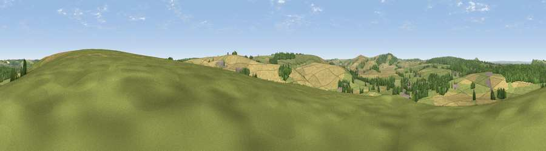

Viewpoint near Hill Deverill
#29617 in England · top 54% of its area beats it · near Hill DeverillThe view, rendered

A 360° render of this exact spot computed from the terrain model, tree cover and land cover — summer colours, afternoon light, calibrated against photographs of famous viewpoints. Real trees, hedges and buildings will differ in detail.
The panorama
Grey silhouette: terrain skyline in each direction (720 bearings, Earth curvature and refraction included). Dashed green: skyline with trees (+15 m) and buildings (+8 m) as obstacles. Blue strip: how far the ground is visible on each bearing.
Where the view opens
Wedge length = distance to the farthest visible ground on that bearing (vegetation-aware). Rings at 10, 25 and 50 km.
What fills the view
44% grassland · 41% cropland · 14% woodland · 1% built-up
Angular shares of the visible panorama (visual magnitude), not map area. Landscape diversity 0.46 (0–1 Shannon).
Key numbers
More beautiful places nearby
The staircase of upgrades: each row has a higher view potential than everything closer. Driving times are estimates from straight-line distance, calibrated against real road routing — check an actual route before setting out.
| Place | Direction | Drive | Score |
|---|---|---|---|
| Viewpoint near Longbridge Deverill | NE · 1 km | ~2 min | 55.9 |
| Viewpoint near Brixton Deverill | SSW · 3 km | ~7 min | 56.2 |
| Viewpoint near Monkton Deverill | WSW · 4 km | ~10 min | 70.9 |
| Cley Hill | NW · 6 km | ~13 min | 76.8 |
| Viewpoint near Berwick St John | SSE · 20 km | ~34 min | 78.2 |
| Beacon Batch | WNW · 43 km | ~63 min | 79.4 |
| Bleadon Hill [Loxton Hill] | WNW · 54 km | ~76 min | 79.6 |
| Eggardon Hill | SW · 57 km | ~79 min | 80.3 |
51.16430, -2.16978 · source: screening · position refined by local search. Computed location — check access rights before visiting.